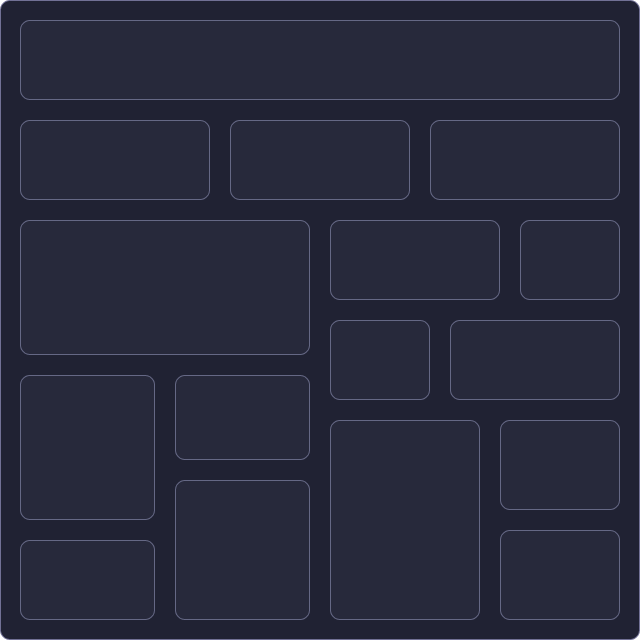
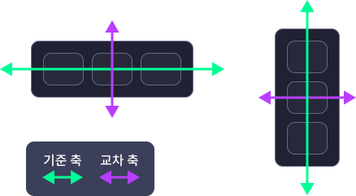

CSS 활용하기
정렬을 위한 여러가지 CSS 기법
박스 모델
- 1. 박스 모델
- 2. 디자인에서 영역 나누기
- 3. 정렬영역 나누기 규칙
- 마크업 구성요소들은 박스 형태로 정의
- 각 요소들의 박스형태를 어떻게 배치하느냐?
- 박스는 좌에서 우로, 위에서 아래로 정렬
- 박스는 margin영역, padding영역, border영역, contents영역으로 구성
- 박스의 크기에 대한 기준을 "contents 영역"으로 할 것인지, "border 영역"으로 할 것인지에 따라 css 구성법이 달라짐
- 브라우저 기본값은 "contents 영역"이지만, 보통은 "border 영역"을 기준으로 변경하여 작업을 진행함
-

- 위아래 박스가 그리드를 침범하지 않는 선에서 좌우 정렬이 가능한 경우, 하나의 row로 묶어서 정렬
- 좌우 박스가 그리드를 침범하지 않는 선에서 위아래 정렬이 가능한 경우, 하나의 column으로 묶어서 정렬
- 복합적인 경우, 가장 적게 묶이는 방향으로 영역 나누기 지정
- box-sizing:
box
- Box Width: 300
- Box Height: 150
- margin
- padding
- border
- contents area
요소 선택하기
- 1. 셀렉터
- 2. 우선순위
- 3. 가상 셀렉터
- 셀렉터
- CSS 적용을 위한 대상 지정
- tag, id, class, *, 가상 셀렉터, 태그속성, 선택자 조합 등
- 각 셀렉터들을 조합하여 우선순위 등을 조정할 수 있음
- 기본 우선순위
- !important
- 인라인 스타일 (html 구조 내 태그에 직접 style 속성으로 부여한 css)
- id (#selector)
- class (.selector)
- tag (div)
- *
- 가상 셀렉터는 가상 클래스(인터랙션, 구조 등)와 가상 엘리먼트로 나뉨
- 가상 셀렉터 (자주 사용하는 것만 나열)
- 가상 클래스(인터랙션) - :hover, :active, :focus, :checked, :selection
- 가상 클래스(구조) - nth-child(n), :first-child, :last-child
- 가상 엘리먼트 - :before, :after
display
- 1. display 개요
- 2. block
- 3. inline
- 4. inline-block
- 마크업의 구성요소는 display 속성을 통해 배치되는 특성을 지정할 수 있음
- display의 대표적인 속성
- block / inline / flex / grid / table / none
- 영역, 제목, 문단, 목록 등 컨텐츠를 묶는 요소 등에 기본 값으로 지정되어있음
- 부모 요소의 영역 시작부터 끝까지 차지하는 특성을 지님
- 상하 배치에 활용
- width, height 적용 O
- margin, padding 적용 O
- 텍스트, 이미지, 링크 등 컨텐츠 구성 요소 등에 기본 값으로 지정되어있음
- 요소 하나하나가 글자처럼 취급되는 특성을 지님
- 좌우 배치에 활용
- width, height 적용 X
- margin, padding 부분 적용 (좌우 방향에 대해서만 적용됨)
- 글자 정렬을 위한 CSS 속성 적용 O (수평, 수직 정렬 등)
- 부모 영역에 나열될 때, 영역보다 많은 것이 나열되는 경우 줄바꿈처럼 적용됨
- 인라인 요소 간의 고유한 간격이 적용됨
- inline의 특성 기반에, block의 특성이 가미된 형태
- block 특성에서 다음이 적용됨
- width, height 지정 가능
- margin, padding의 상하 지정까지 모두 가능
- display:
- width:
- height:
- margin:
- padding:
- line-height:
- text-align:
1
2
3
4
5
flexbox
- 1. flexbox
- 2. flexbox의 기본 규칙
- 3. 기본으로 설정된 속성
- 4. flexbox conatiner의 속성들
- 4. flexbox item의 속성들
- 레이아웃을 더욱 효과적으로 배치하기 위해 고안된 새로운 CSS 레이아웃 모듈
- 좌우 정렬, 가운데 정렬, 너비의 비율 분할 등의 레이아웃 구성을, 기존의 복잡한 방식보다 간단하게 구현할 수 있음
- 좌우 정렬을 위해, 기존에는 inline-block, float 등을 활용
- 상하 정렬을 위해, line-height, vertical-align 등을 활용
- 가운데 정렬을 위해, text-align, position, transform:translate, table-cell 등을 활용
-
 - flexbox는 "플렉스 컨테이너"와 "플렉스 아이템"으로 구성
- flexbox는 "기준축"과 "교차축"에 대한 정렬이 가능
- 설정된 정렬 기준축에 따라 선언 속성을 다르게 함
- display:flex;로 선언하는 경우, 기본값은 다음과 같다.
- 정렬 기준축 : 좌우 정렬
- flex-direction: row;
- 기준축 정렬 : 시작점(좌측상단)에서 시작
- justify-content: flex-start;
- 교차축 정렬 : 영역 채우기
- align-items: stretch;
- flex-direction(정렬 기준축)
- row, column, row-reverse, column-reverse
- justify-content(기준축 정렬)
- flex-start, center, flex-end, space-around, space-between, space-evenly
- align-items(교차축 정렬)
- stretch, flex-start, center, flex-end, baseline
- flex-wrap(줄바꿈 처리)
- nowrap, wrap, wrap-reverse
- 공사중...
- display:
- flex-direction:
- justify-content:
- align-items:
111111111111
222
3
444444
5
reset.css
- 1. 왜 reset하는가?
- 2. 초창기의 reset 작성
- 3. reset의 표준화
- 4. reset의 적용범위에 대한 고찰
- 5. 레퍼런스
- 웹 화면은 문서를 공유하기 위해 탄생
- 한글, 워드와 같이 문서 서식이 필요했고, CSS가 없었던 시절에는 HTML 태그 고유의 기본 서식이 적용
- CSS 탄생 후에는, 기존의 태그 고유 서식이 각 태그의 기본 CSS 성분이 되고, 이를 User-Agent StyleSheet라고 함
- 웹 표준성이 대두되기 전에는, 각 브라우저가 서로 다른 서식을 가짐 (특히 IE)
- 어느 환경에서 접속해도, 의도한 사용자 경험을 제공하기 위해(웹 호환성, cross browsing), 각 브라우저의 기본 설정을 초기화 하는 것이 reset.css의 역할
- 브라우저 기본서식을 초기화하는 것에 대한 고민
- 하드리셋
- * {margin:0; padding:0; box-sizing:border-box; ... }
- 일괄적인 reset이 가능하지만, * (Universal Selector)를 사용하는 경우 성능 이슈 발생
- 에릭마이어 reset.css
- reset.css 중 가장 오래되고 유명한 코드 (2011년이 가장 최신)
- 시간이 지나며 사용되지 않은 태그 다수 포함됨
- reset을 위한 코드의 부피도 거대화되는 단점 발생
- 레퍼런스
- reset.css에 대한 표준화 시도
- 각 브라우저 고유 기본 css인 User-Agent StyleSheet에도 표준이 생겼으나, 여전히 브라우저 간 동일한 서식은 아니었음
- normalize.css의 탄생
- Normalize.css
- 기존 에릭마이어 스타일의 reset은, 모든 태그를 comma로 연결한 거대한 덩어리의 코드 (예시)
- 기존의 모든 태그를 한번에 선언하는 것이 아닌, 각 태그 또는 밀접한 관련이 있는 태그끼리 묶어 reset css 코드를 작성
- Opinionated Normalize
- normalize.css 기반 위에, 더 나은 default 스타일을 추가
- reset은 각 퍼블리셔마다 다르고, 기업마다 자사 홈페이지에 활용하는 것이 모두 다름
- 최소한의 reset만 하는 경우도 있음
- 각 태그의 여백, 간격, 테두리 등 정도만 0으로 초기화
- 개인적인 연구 - 카테고리화하여 컴팩트함을 유지하기 위한 방향으로 진행
- 동일한 태그끼리 묶어서 초기화
- 시멘틱 태그 초기화
- 가상 클래스에 대한 초기화
- 입력폼, 인터랙션 관련 태그 초기화
- 반응형에 대한 기본 세팅